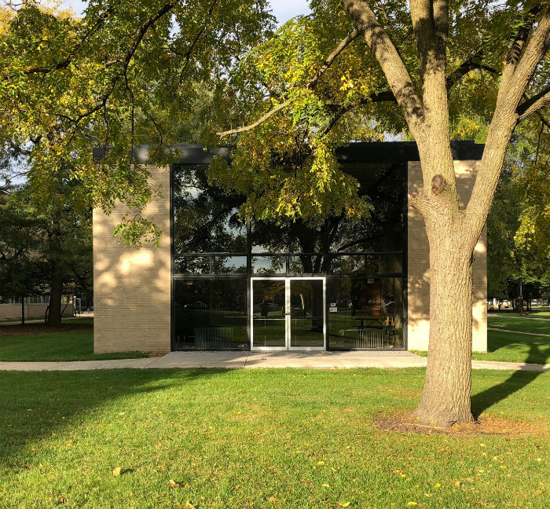
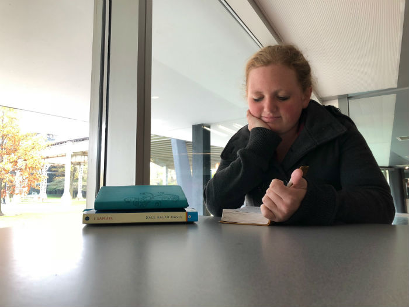

We meet every Thursday night at 7pm in the Godbox (aka Carr Chapel).
These weekly meetings typically last an hour to an hour and a half,
and we spend this time in fellowship with one another. A meeting
begins with worship, moves to an icebreaker activity, proceeds to a
mini-sermon from a guest speaker, and ends with worship. Weekly
meetings are a great way to meet other believers on campus and make
new friends! All are welcome!

Here is the Godbox where we hold our weekly meetings.
This building is located between the MSV and Carmen residence halls
on IIT's Mies campus in Chicago, IL. We can always use volunteers to
help get the building ready for our meetings!
Bible Studies
We hold various Bible studies throughout the week to allow
students to learn more about what the Bible really says. This
semester we are going through the book of Romans, and our study
times are as follows:
Monday- 7pm -MTCC Colored Rooms
Tuesday- campus lunch hour -PH 108
Tuesday- 5pm -Gunsaulus 306 (athletes only)
Wednesday- campus lunch hour -WH 116 (women only)
Wednesday- 7pm -MTCC Colored Rooms
Each of these groups studies the same passage every week, so we
encourauge you to find one that fits with your schedule. (If
none of these times work with your schedule, please let us know
at iitcru@gmail.com or
consider trying discipleship).
Discipleship
Discipleship is a one-on-one weekly meeting with a CRU staff member
or older student. These meetings serve as bible studies, spiritual
conversations, and accountability sessions. Unlike a bible study,
this individual meeting allows you to choose what topic you would
like to go through with your discipler for the semester, so you can
always be focused on what's been put on your heart. Discipleship
allows you to really walk beside another person and share your
spiritual journey with them.

Jasmine is one of the women who disciples the girls on
our campus. She has her students pick a topic they'd like to learn
about every semester, and she buys them each a book to read on that
topic.